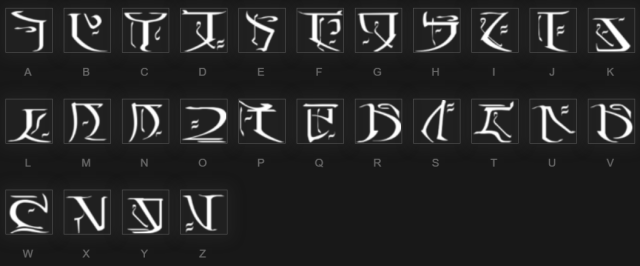

Introduction
Commonly referred to as the Falmer language, this is a language originally written by the Snow Elves. The term "Falmer" is used due to the fact that it is the original name of the Snow Elves. The language has an apparant similarity to Ayleidoon, the language of the Ayleids.
Falmer Alphabet
